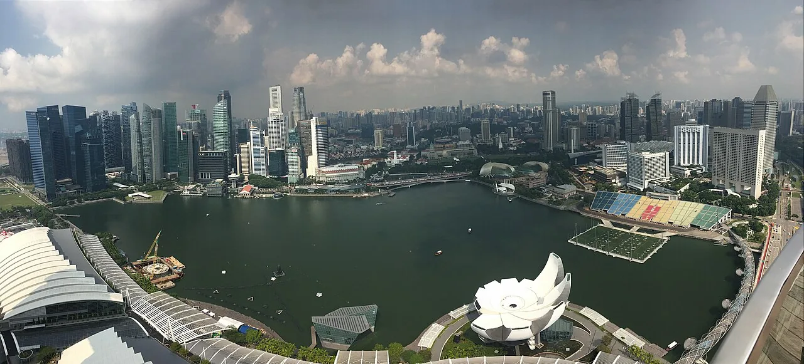

01
01Industrial parks & infrastructure
Earthworks-heavy programmes hinge on a few high-volume activities. We track production rates so the programme reflects what the site can actually achieve.

Sectors
We focus the controls effort on the drivers that shape performance in each delivery context.
01Earthworks-heavy programmes hinge on a few high-volume activities. We track production rates so the programme reflects what the site can actually achieve.
 02
02We model long-lead equipment as schedule constraints and manage interfaces explicitly, so a late item does not quietly derail everything downstream.

03We integrate packages into one master programme with shared milestones, making cross-package risk visible at the top rather than buried in silos.
 04
04We produce traceable reporting structured for lenders and stakeholders, with the independence that scrutiny demands.
Your delivery context